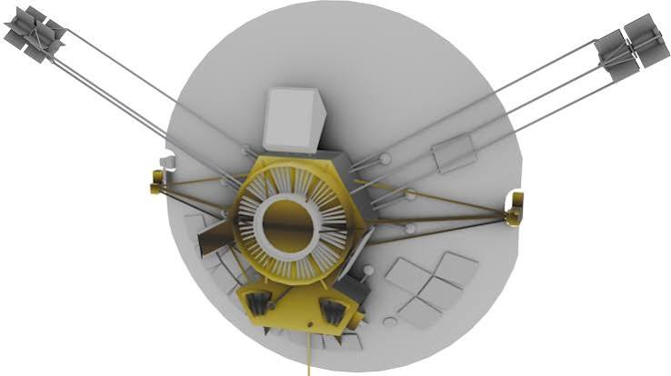

Who am I?
I am Pioneer 10, one of NASA's early robotic explorers of deep space. I launched on March 2, 1972, with a bold goal: travel beyond the inner planets, cross the asteroid belt, and send the first close-up information about Jupiter. At that time, scientists did not know whether a spacecraft could safely pass through the asteroid belt or survive the intense radiation near Jupiter. My design included scientific instruments, a communication system, a large antenna, and a power source that could operate far from the Sun. I was built for a mission that was expected to last much less than my eventual journey. My flight helped turn the outer Solar System from a distant subject of observation into a place that spacecraft could visit and measure directly.
